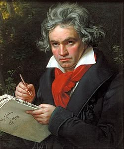

Beethoven
Ludwig van Beethoven bol nemecký skladateľ a klavirista, ktorý patrí medzi najvýznamnejších hudobníkov všetkých čias a symbolizuje prechod medzi klasicizmom a romantizmom. Narodil sa 17. decembra 1770 v Bonne a väčšinu života pôsobil vo Viedni. Už v mladosti prejavil výnimočný hudobný talent, no jeho život poznačilo postupné zhoršovanie sluchu, až napokon úplne ohluchol. Napriek tomu vytvoril niektoré zo svojich najväčších diel práve v období úplnej hluchoty. Medzi jeho najznámejšie skladby patria Symfónia č. 5, Symfónia č. 9 „Óda na radosť“, Měsíční sonáta a Fidelio – jeho jediná opera. Beethovenova hudba je silná, dramatická a emocionálne hlboká, pričom často vyjadruje osobný boj, odhodlanie a víťazstvo ducha. Jeho vplyv na hudbu je obrovský – ovplyvnil generácie skladateľov a položil základy romantického štýlu. Beethoven je dnes vnímaný ako jeden z najväčších symbolov umeleckého génia a ľudskej odolnosti.
Späť na hlavnú stránku